卷积神经网络（CNN）
Convolutional Neural Networks —— 互动讲义
回顾：单隐含层网络
在介绍卷积神经网络之前，先回顾前馈神经网络中的单隐含层网络，看看它直接处理图像时会遇到什么麻烦。
1.1单隐含层网络的结构
在介绍卷积神经网络之前，我们先回顾一下前馈神经网络中的单隐含层网络。

它的数学表达为：
\(\mathbf{h} = \sigma(\mathbf{W}\mathbf{x} + \mathbf{b})\)
其中：
- \(\mathbf{x}\) 是输入向量
- \(\mathbf{W}\) 是权重矩阵
- \(\mathbf{b}\) 是偏差向量
- \(\sigma\) 是激活函数（如 ReLU、Sigmoid 等）
- \(\mathbf{h}\) 是隐含层的输出
1.2图像输入带来的参数爆炸
当我们将图像作为输入时，问题就出现了。以 CIFAR-10 数据集中的图像为例：

- 图像尺寸：32 × 32 像素
- 颜色通道：3（RGB）
- 输入节点数 = 32 × 32 × 3 = 3,072
如果隐含层有 100 个神经元，那么：
- 权重参数数量 = 3,072 × 100 = 307,200 个
这还只是一个隐含层！如果网络更深、图像更大，参数量会呈指数级增长。
参数量随输入维度爆炸式增长，导致计算开销巨大、容易过拟合。
1.3全连接网络的三个缺陷
将全连接网络直接用于图像处理存在三大问题：
| 问题 | 描述 | CNN 的解决方案 |
|---|---|---|
| 参数量巨大 | 每个像素与每个神经元全连接 | 局部连接 + 权值共享 |
| 空间信息丢失 | 将二维图像展平为一维向量，破坏空间结构 | 保留二维结构进行卷积 |
| 平移变化敏感 | 物体位置稍有变化，网络就难以识别 | 平移不变性（卷积+池化） |
这三个问题直接催生了卷积神经网络（CNN）的诞生。
卷积神经网络概述
CNN 用卷积运算替代全连接层中的矩阵乘法，专门为图像这样的网格化数据而设计。
2.1什么是 CNN？
卷积神经网络（Convolutional Neural Networks，CNN）是一类专门为处理网格化数据（如图像）而设计的深度神经网络。其核心思想是使用卷积运算替代全连接层中的矩阵乘法。


2.2CNN 的基本架构
典型的 CNN 架构包含以下层次结构：
输入图像 → 卷积层(特征提取) → 池化层(下采样) → ... → 全连接层(分类) → 输出
- 卷积层：提取局部特征（边缘、纹理、形状等）
- 池化层：降低空间分辨率，提供平移不变性
- 全连接层：综合特征进行最终分类
浅层网络检测边缘和纹理等低级特征，深层网络检测物体部件和语义概念等高级特征。
2.3CNN 之父——Yann LeCun（杨立昆）
Yann LeCun 是深度学习领域的奠基人之一，被誉为"卷积神经网络之父"。他与 Geoffrey Hinton、Yoshua Bengio 并称"深度学习三巨头"，于 2018 年共同获得图灵奖。
LeCun 的关键贡献：
| 年份 | 贡献 | 意义 |
|---|---|---|
| 1989 | 将反向传播应用于卷积神经网络 | 首次证明 CNN 可以通过梯度下降训练 |
| 1998 | LeNet-5 | 最早的实用 CNN 架构，成功应用于银行支票手写数字识别，奠定了现代 CNN 的基础 |
| 2013 | Facebook AI Research（FAIR）主任 | 领导大规模 AI 研究，推动 CNN 在工业界的广泛应用 |
CNN 不是一蹴而就的——LeNet-5 在 1998 年就已提出，但由于数据和算力不足，直到 2012 年 AlexNet 出现才真正引爆了 CNN 革命。技术积累需要时间，但基础理论始终是关键的。
卷积运算基础
卷积核在图像上逐行逐列滑动，每次只看一个小区域——这就是 CNN 提取局部特征的方式。
3.1什么是卷积？
直观理解：卷积就像用一个"放大镜"（卷积核）在图像上逐行逐列滑动，每次只看一个小区域，提取该区域的局部特征。

- 卷积核（Kernel / Filter）：一个小的权重矩阵，相当于"特征探测器"
- 输出（特征图）：每个位置记录核与输入局部区域的匹配程度
- 不同核 → 不同特征图：边缘检测核、模糊核、锐化核等
3.2互相关与卷积
在数学上，有两个密切相关的概念需要区分：
2-D 互相关（Cross-Correlation）— 深度学习实际使用
\(h(i,j) = \sum_{a}\sum_{b} X(i+a,\ j+b) \cdot K(a,b)\)
核不做翻转，直接滑动计算。
2-D 卷积（Convolution）— 严格数学定义
\(h(i,j) = \sum_{a}\sum_{b} X(i-a,\ j-b) \cdot K(a,b)\)
核翻转180°后滑动计算。

实际使用的是"互相关"运算，但习惯上仍称其为"卷积"。因为翻转操作不改变特征提取能力，省去翻转可以节省计算开销。
深入理解：互相关 vs 卷积 vs 自相关——这三种运算密切相关但各有不同用途。根据上图中的对比：
| 运算 | 核心操作 | 直观理解 |
|---|---|---|
| 互相关 Cross-Correlation |
核不做翻转，直接滑动计算 | 用模板匹配：问"这张图中哪里长得像我手上的模板？"。把模板（核）放在图上滑动，匹配度越高，输出值越大。CNN 实际使用的就是这个。 |
| 卷积 Convolution |
核翻转 180° 后再滑动计算 | 用系统中的冲激响应来想：输入信号经过一个线性系统，输出是输入与系统冲激响应的卷积。翻转保证了交换律：\(f * g = g * f\)（互相关不满足交换律）。数学上更优雅，但 CNN 中翻转与否不影响学习效果。 |
| 自相关 Autocorrelation |
信号与自身做互相关 | 检测信号内部的重复模式/周期性：把信号在时间轴上平移后与原信号比较。峰值出现在位移量等于周期的地方。常用于信号处理、基因序列分析等领域。 |
在 CNN 教材中看到"卷积"两个字，脑子里要自动翻译成"互相关（核不翻转）"。在深度学习领域，这一术语已被广泛接受，但需理解其运算本质为互相关。
3.3二维交叉相关计算实例
输入为 3×3 矩阵，核为 2×2 矩阵。


输入矩阵 X：
[0 1 2]
[3 4 5]
[6 7 8]
核矩阵 K：
[0 1]
[2 3]
计算过程（核在输入上滑动，每个位置逐元素相乘再求和）：
| 位置 | 计算过程 | 结果 |
|---|---|---|
| (0,0) | 0×0 + 1×1 + 3×2 + 4×3 | 19 |
| (0,1) | 1×0 + 2×1 + 4×2 + 5×3 | 25 |
| (1,0) | 3×0 + 4×1 + 6×2 + 7×3 | 37 |
| (1,1) | 4×0 + 5×1 + 7×2 + 8×3 | 43 |
输出矩阵 Y：
[19 25]
[37 43]

输出尺寸 = 输入尺寸 − 核尺寸 + 1，即对于 \(n_h \times n_w\) 的输入和 \(k_h \times k_w\) 的核，输出为 \((n_h - k_h + 1) \times (n_w - k_w + 1)\)。
二维卷积层
4.1卷积层的数学定义
二维卷积层的核心运算：
\(\mathbf{Y} = \mathbf{X} \star \mathbf{W} + b\)
其中：
- \(\mathbf{X}\)：\(n_h \times n_w\) 输入矩阵
- \(\mathbf{W}\)：\(k_h \times k_w\) 核矩阵（可学习参数）
- \(b\)：偏差标量（可学习参数）
- \(\mathbf{Y}\)：\((n_h - k_h + 1) \times (n_w - k_w + 1)\) 输出矩阵
\(\mathbf{W}\) 和 \(b\) 是可学习的参数，通过反向传播算法优化。
4.2卷积层与全连接层的对比
| 特性 | 全连接层 | 卷积层 |
|---|---|---|
| 连接方式 | 每个输入与每个输出相连 | 局部连接（只与核窗口内的输入相连） |
| 参数量 | 输入维度 × 输出维度 | \(k_h \times k_w\)（与输入大小无关） |
| 空间结构 | 丢失（展平为一维） | 保留（二维滑动） |
| 权值共享 | 无 | 同一核在整个输入上共享 |
填充与步幅
卷积会让特征图越卷越小——填充和步幅就是控制输出尺寸的两个旋钮。
5.1填充（Padding）
为什么需要填充？卷积运算会使输出尺寸变小。例如，3×3 输入用 2×2 核卷积得到 2×2 输出。经过多层卷积后，特征图会不断缩小，最终可能"消失"。
解决方案：在输入周围添加额外的行/列（通常填充 0）。


填充后的输出尺寸：
\((n_h - k_h + p_h + 1) \times (n_w - k_w + p_w + 1)\)
其中 \(p_h\) 和 \(p_w\) 分别是在高度和宽度方向的总填充量。
常用设置
- 通常取 \(p_h = k_h - 1\)，\(p_w = k_w - 1\)（使输出与输入尺寸相同）
- 当 \(k_h\) 为奇数时：上下各填充 \(p_h / 2\)
- 当 \(k_h\) 为偶数时：上侧填充 \(\lceil p_h/2 \rceil\)，下侧填充 \(\lfloor p_h/2 \rfloor\)
5.2步幅（Stride）
步幅是卷积核在输入上滑动时的步长。默认步幅为 1（每次移动 1 个像素）。


步幅后的输出尺寸：
\(\left\lfloor \frac{n_h - k_h + p_h + s_h}{s_h} \right\rfloor \times \left\lfloor \frac{n_w - k_w + p_w + s_w}{s_w} \right\rfloor\)
其中 \(s_h\) 和 \(s_w\) 分别是高度和宽度的步幅。
5.3交互演示：输出尺寸计算器
输出尺寸 = ⌊(n − k + p) / s⌋ + 1 = 5 × 5
多输入输出通道
彩色图像有 RGB 三个通道——卷积层需要能"吃进"多通道、也能"吐出"多通道。
6.1多个输入通道
彩色图像有 RGB 三个通道，转灰度会丢失颜色信息。因此卷积层需要处理多通道输入。


- 输入 \(\mathbf{X}\)：\(c_i \times n_h \times n_w\)（\(c_i\) 个输入通道）
- 卷积核 \(\mathbf{W}\)：\(c_i \times k_h \times k_w\)（每个输入通道对应一个核）
- 输出 \(\mathbf{Y}\)：\(n_h \times n_w\)（所有通道卷积结果求和）
多输入通道卷积公式：
\(\mathbf{Y} = \sum_{c=0}^{c_i-1} \mathbf{X}(c,:,:) \star \mathbf{W}(c,:,:)\)
计算实例：

- 通道1卷积：1×1 + 2×2 + 4×3 + 5×4 = 35
- 通道2卷积：0×0 + 1×1 + 3×2 + 4×3 = 21
- 总和 = 35 + 21 = 56
无论有多少输入通道，单核卷积输出只有一个通道！
下面这张动图把两个通道"各算各的、再相加"的过程完整演示一遍（2 个输入通道、2 个 2×2 核、输出 2×2）：

6.2多个输出通道
要获得多个输出通道，需要使用多个三维卷积核。

- 卷积核 \(\mathbf{W}\)：\(c_o \times c_i \times k_h \times k_w\)（\(c_o\) 个输出通道）
- 每个输出通道 \(\mathbf{O}_i = \mathbf{X} \star \mathbf{W}(i,:,:,:)\)
每个输出通道可以识别一种特定的模式，例如：
- 通道1：检测水平边缘
- 通道2：检测垂直边缘
- 通道3：检测45°对角线
- 通道4：检测特定纹理

1×1 卷积层
7.1什么是 1×1 卷积？
当 \(k_h = k_w = 1\) 时，卷积核退化为 1×1 大小。它不涉及空间邻域信息——每个位置只看同一像素的不同通道。

7.21×1 卷积的本质
1×1 卷积等价于在每个像素位置施加一个从 \(c_i\) 到 \(c_o\) 的全连接层：
- 输入：该像素位置的 \(c_i\) 个通道值
- 权重：\(c_o \times c_i\) 矩阵（所有像素共享）
- 输出：该像素位置的 \(c_o\) 个通道值
7.3主要用途
| 用途 | 说明 |
|---|---|
| 通道数变换 | 升维（增加通道数）或降维（减少通道数） |
| 跨通道信息融合 | 在不改变空间尺寸的前提下融合通道信息 |
| 增加非线性 | 配合激活函数，增加网络的表达能力 |
1×1 卷积的核心优势在于：不改变空间尺寸，只做通道间的线性变换。可以把它理解为"给每个像素点单独做了一次矩阵乘法"。
与 3×3 卷积的本质区别：
| 维度 | 3×3 卷积 | 1×1 卷积 |
|---|---|---|
| 空间感受野 | 看当前像素 + 周围 8 个邻居（空间特征提取） | 只看当前像素自己（不做空间特征提取） |
| 通道操作 | 跨通道融合（如果 \(c_i > 1\)） | 只做通道间线性组合（混合不同通道信息） |
| 参数数目 | \(c_o \times c_i \times 3 \times 3\)（较多） | \(c_o \times c_i\)（很少，少了一个 \(k_h \times k_w\) 因子） |
| 典型场景 | 空间特征提取（边缘、纹理等） | 通道数变换、跨通道信息融合 |
1×1 卷积虽简单，但功能强大，被广泛应用于 ResNet、Inception 等现代网络架构中——ResNet 用它升降维以控制计算量，Inception 用它融合不同尺度的特征。
池化层
卷积对位置太敏感——池化层用"取窗口之最"的方式，换来平移不变性。
8.1为什么需要池化层？
卷积层对位置是敏感的——输入图像的微小偏移可能导致输出显著变化。


- 同一物体的照片，可能因为拍摄角度、光照、位置变化而不同
- 卷积核检测垂直边缘时，1 像素的移位可能使输出从非 0 变为 0（或反之）——输出对位置非常敏感
需要一定程度的平移不变性——让网络对小幅度的位置变化不敏感。解决方案：池化层（Pooling Layer）。
8.22-D 最大池化（Max Pooling）
最大池化返回滑动窗口中的最大值：

- 例：2×2 窗口，步幅为 2 → 输出空间尺寸减半
- 窗口内计算：max(0, 1, 3, 4) = 4

特点：
- 没有可学习的参数
- 池化后可容忍 1 像素的位置偏移
- 保留了窗口中最显著的特征信号
8.3池化层的填充、步幅和通道

| 特性 | 说明 |
|---|---|
| 填充和步幅 | 与卷积层相同的设置方式 |
| 可学习参数 | 无（纯粹的函数运算） |
| 通道处理 | 在每个输入通道上独立应用 |
| 输出通道数 | 等于输入通道数（这一点与卷积层不同！） |
卷积层把多通道"融合"成新通道（通道数由核个数决定）；池化层则"各管各的"，通道数不变、只压缩空间尺寸。改变通道数靠卷积（或 1×1 卷积），缩小特征图靠池化或步幅卷积——分工明确。
8.4平均池化（Average Pooling）
| 池化类型 | 操作 | 特点 |
|---|---|---|
| 最大池化 | 取窗口最大值 | 保留最强模式信号，更常用 |
| 平均池化 | 取窗口平均值 | 更平滑，保留整体分布信息 |
Why CNN？—— 卷积神经网络的核心优势
权值共享、局部性、平移不变性、层次特征——四根支柱撑起 CNN 的高效与强大。
9.1权值共享
卷积核可以看作一种"模板"，同一个模板在图像的各个位置滑动检测。

参数量 = \(c_o \times c_i \times k_h \times k_w\)（与输入图像大小无关！）
| 网络类型 | 参数量（32×32×3 图像输入，示意对比） |
|---|---|
| 全连接网络 | 3,072 × 100 = 307,200 |
| CNN（3×3 核，64 通道） | 64 × 3 × 3 × 3 = 1,728 |
参数量减少了约 178 倍！这就是 CNN 能在普通 GPU 上训练、而同等全连接网络根本放不下的原因。
9.2局部性
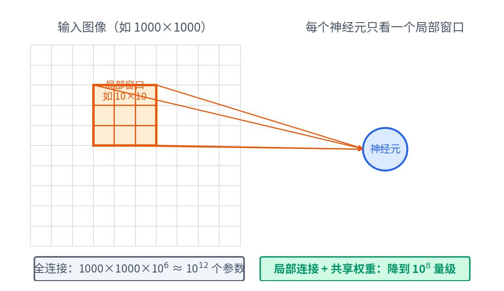
- 图像的特征是局部的：边缘、角点、纹理都在小区域内出现
- 卷积核只需关注 \(k_h \times k_w\) 的局部窗口
- 不需要每个像素与所有像素建立连接
局部性 + 权值共享 = 高效的特征提取
9.3平移不变性

- 平移等变性（Equivariance）：卷积核的权值共享使输出随输入平移而同步平移
- 平移不变性（Invariance）：池化层使输出对小幅位移不敏感
"猫在图像的左上角和右下角，同一个卷积核都能检测到'猫耳'特征。"
"等变"和"不变"只差一个字，意思却相反：卷积负责等变（猫动了，特征图跟着动，但特征不会丢）；池化负责不变（小幅移动后，池化结果几乎一样）。两者配合，网络对目标位置变化就具备了鲁棒性。
9.4层次特征学习

CNN 通过多层结构实现从低级到高级的特征抽象：
浅层 → 边缘、颜色、纹理
↓
中层 → 角点、部件、简单形状
↓
深层 → 物体、场景、语义概念
整个过程是端到端学习的，无需人工设计特征！
代表性卷积神经网络
掌握了 CNN 的基本组件之后，讲义按演化脉络介绍了五个里程碑式的经典网络：LeNet（第一个实用的卷积神经网络）、AlexNet（升级版的 LeNet：ReLU 激活、丢弃法、数据增强）、VGG（升华版的 AlexNet：用重复的"块"做深）、ResNet（残差连接驯服超深网络）和 NiN（网络中的网络：1×1 卷积 + 全局平均池化）。
10.1CNN 的演化脉络
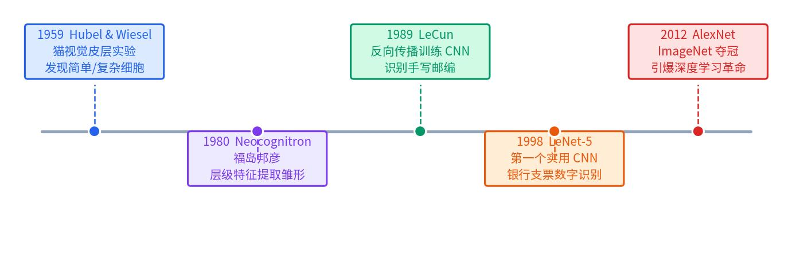
AlexNet 之后，CNN 沿四条主线发展：
- 网络加深：VGG16 → VGG19 → MSRANet，并与增强模块路线集成为 ResNet；
- 增强卷积模块功能：NIN → GoogLeNet → Inception V3/V4；
- 从分类任务到检测任务：SPP-Net / R-CNN → Fast R-CNN → Faster R-CNN；
- 增加新的功能单元：Inception V2（BN）、FCN、STNet、CNN+RNN/LSTM。
10.2LeNet（1998）：第一个实用的 CNN
LeNet 由 Yann LeCun 等人于 1998 年提出（LeCun, Bottou, Bengio, Haffner：Gradient-based learning applied to document recognition），最早成功应用于手写数字识别——邮政编码和银行支票金额的自动读取。它使用的 MNIST 数据集包含居中缩放后的 28×28 灰度图像：60,000 个训练样本、10,000 个测试样本、共 10 类。
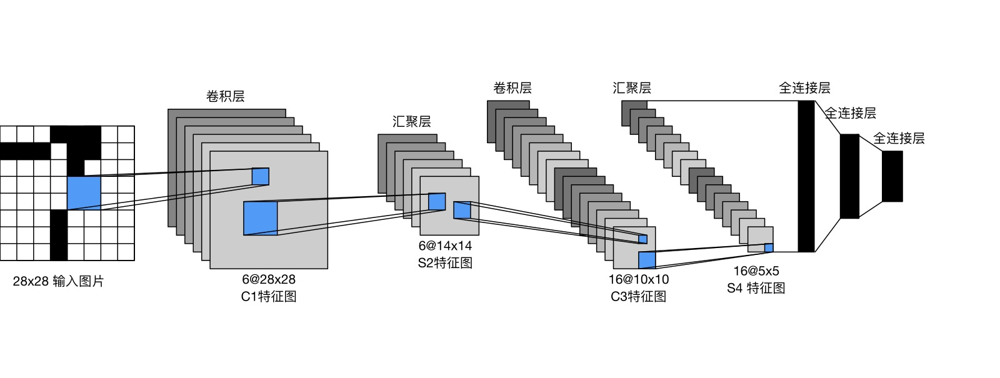
每一层的输入尺寸、卷积/池化配置、输出尺寸和训练参数都可以手工核算——这正是本章前面所有公式的一次完整实战：
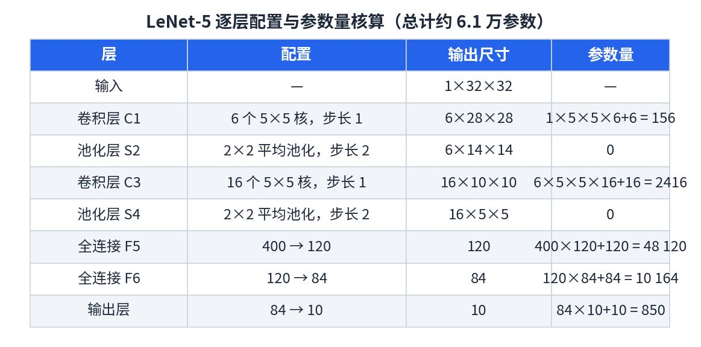
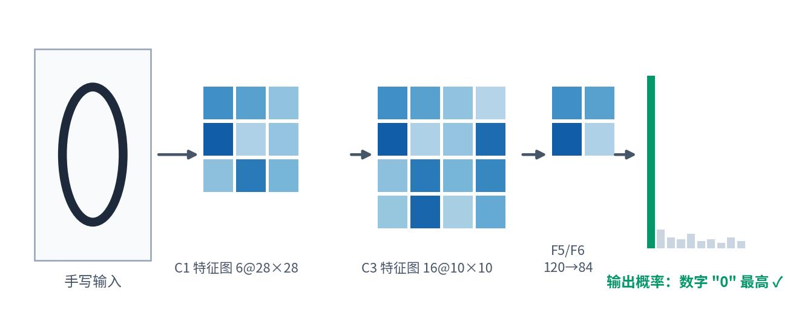
10.3AlexNet（2012）：引爆深度学习革命
2012 年，AlexNet 以巨大优势赢得 ImageNet 竞赛，让全世界重新认识了深度学习。它面对的 ImageNet 数据集（2010）比 MNIST 大了好几个数量级：
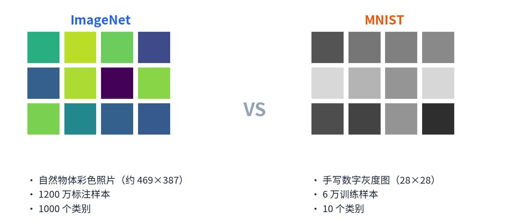
AlexNet 本质上是"更深更大的 LeNet"，主要修改包括：
- 结构更大：更大的卷积核（11×11、步幅 4）与更大的池化窗口，池化改为最大池化；增加 3 个额外的卷积层，输出通道更多；隐含层大小从 120 增加到 4096；输出从 10 类变为 1000 类；
- ReLU 激活：替代 sigmoid，缓解梯度消失，训练更快；
- 丢弃法（Dropout）：在两个隐含层之后应用，正则化效果更好、训练更稳定；
- 数据增强：扩充训练数据，提升泛化。
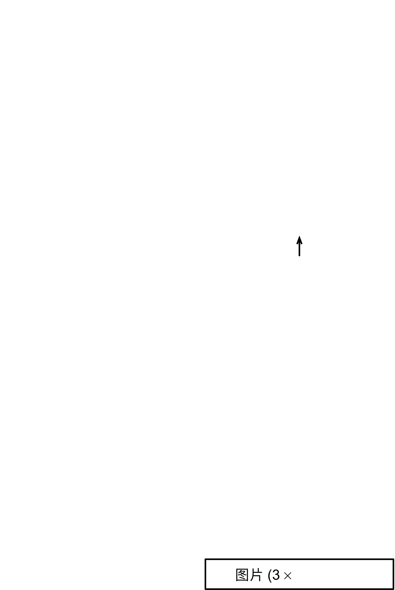
代价是计算量与参数量的飙升——这也解释了为什么 AlexNet 必须依靠 GPU 训练：
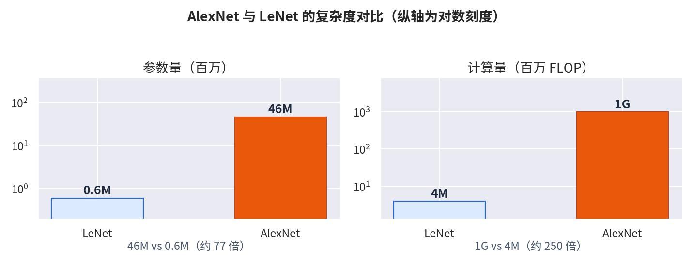
10.4VGG（2014）：用重复的"块"做深网络
AlexNet 已经比 LeNet 更深更大，下一步怎么走？两个选项：更多全连接层（开销太大，不可取）或更多卷积层。VGG 选择了后者，并给出两条关键设计经验：
- 卷积层分组成"块"：像搭积木一样重复堆叠，便于构建不同深度的网络；
- 用小核替代大核：5×5 卷积换成多个 3×3 卷积——更深、更窄的网络效果更好。
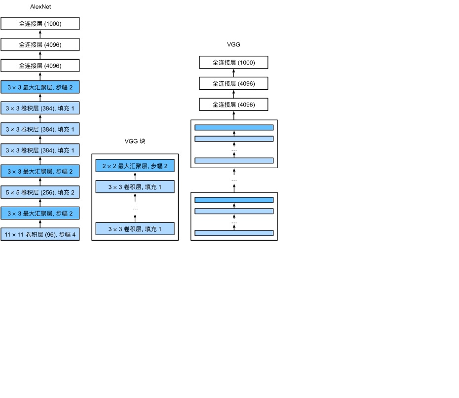
完整的 VGG 网络由多个 VGG 块后接稠密层构成；改变块的重复次数，就得到 VGG-16、VGG-19 等不同架构：
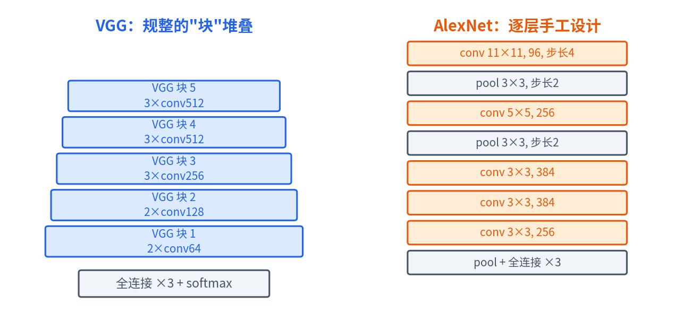
10.5ResNet（2015）：残差连接驯服超深网络
网络继续加深会遇到两个障碍：梯度爆炸/消失，以及网络退化（degradation）——层数增加，训练误差不降反升。ResNet 的核心组件是跳跃连接（Skip / shortcut connection）：
- 普通网络（Plain net）：直接拟合目标映射 \(H(x)\)；
- 残差网络（Residual net）：改为拟合残差映射 \(F(x)\)，令 \(H(x) = F(x) + x\)——学"变化量"比学"完整映射"容易得多，恒等映射只需让 \(F(x)\) 趋近 0。
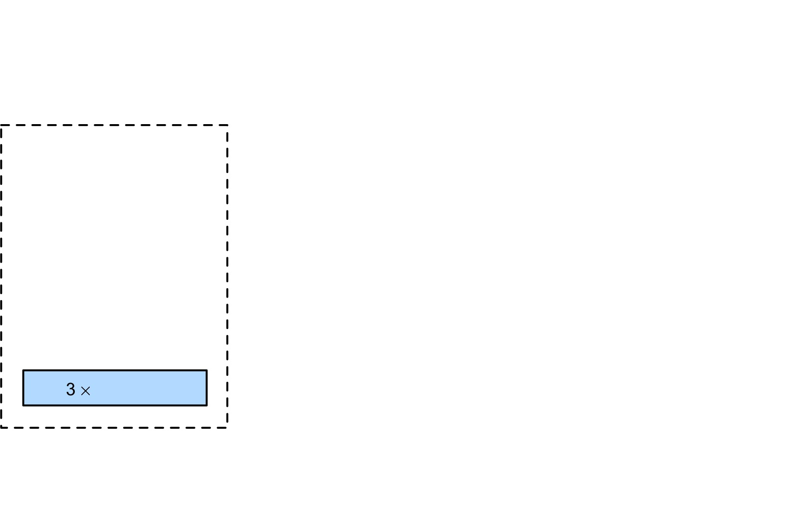
更深的 ResNet 用 Bottleneck（瓶颈）结构优化残差映射：原始两层 3×3×256×256 卷积，改为 1×1×256×64 → 3×3×64×64 → 1×1×64×256——先用 1×1 卷积降维、再升维，计算量相近但深度大增（用于 ResNet-50/101/152）：
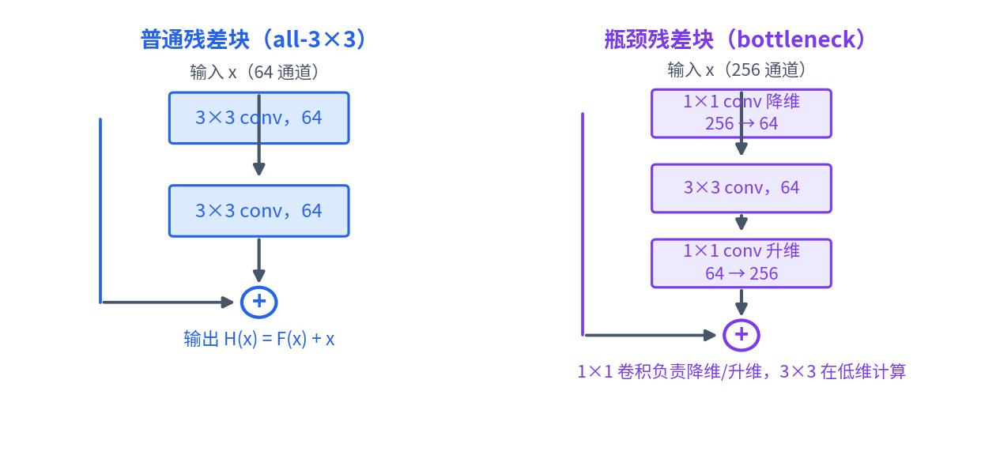
残差连接让网络深度从十几层跃升到上百层。讲义给出的典型 CNN 对比一览：
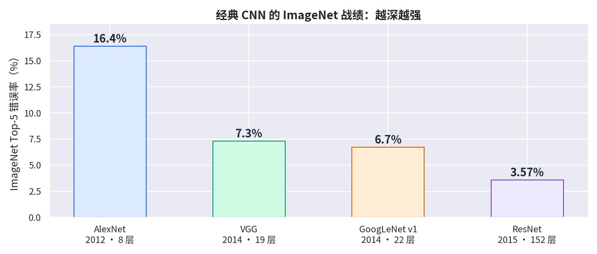
10.6NiN：网络中的网络
前面所有网络都有一个通病——"最后一层的诅咒"：卷积层参数其实很少，但末尾的稠密层参数巨大（LeNet 末层 16×5×5×120=48K，AlexNet 更是 256×5×5×4096≈26M）。NiN（Network in Network）的思路是打破最后一层诅咒：
- 关键理念：丢弃末尾的一个或几个稠密层；卷积和池化逐步降低分辨率（如步幅 2 降 4 倍），同时增加通道数量；
- 为什么用 1×1 卷积：具有 n 个通道的极端情况相当于"1×1 图像"——在每个像素位置上施加一个 MLP，正好充当稠密层；推理时池化还能增强平移稳定性。
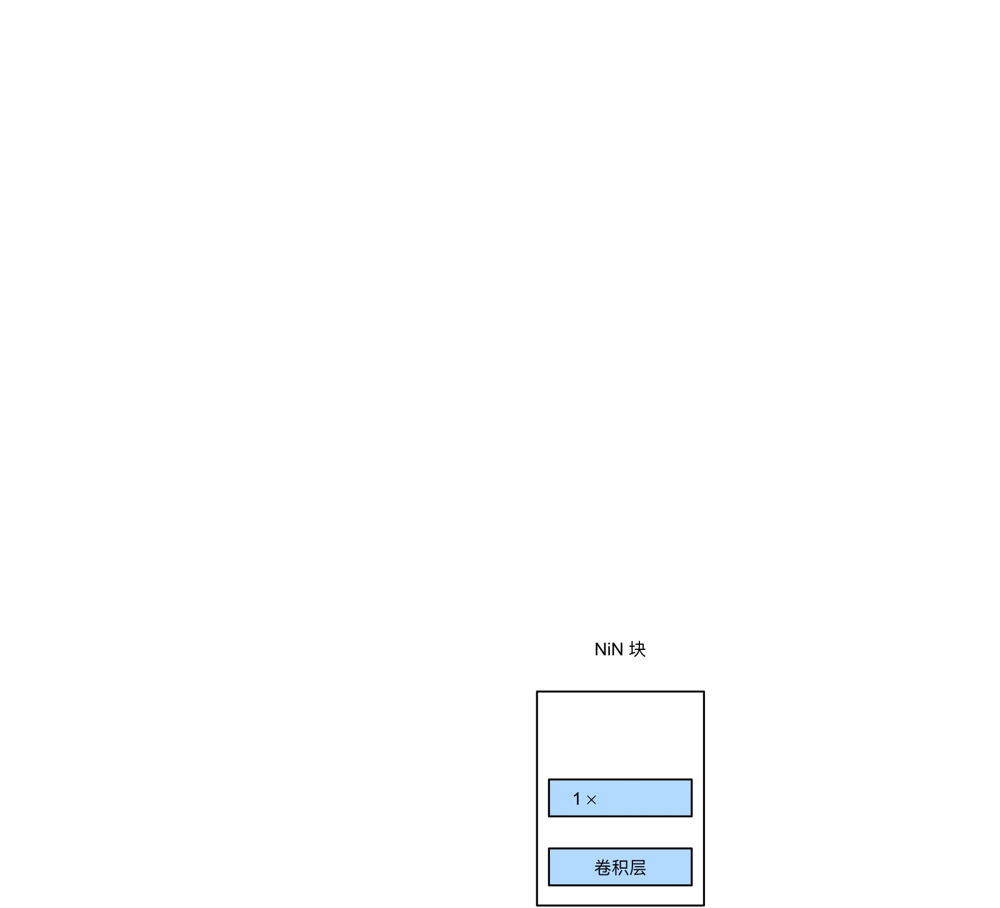
完整的 NiN 网络用 NiN 块替换了 AlexNet 的稠密层，最后用全局平均池化层直接输出每个类别的分数——彻底告别庞大的全连接层：
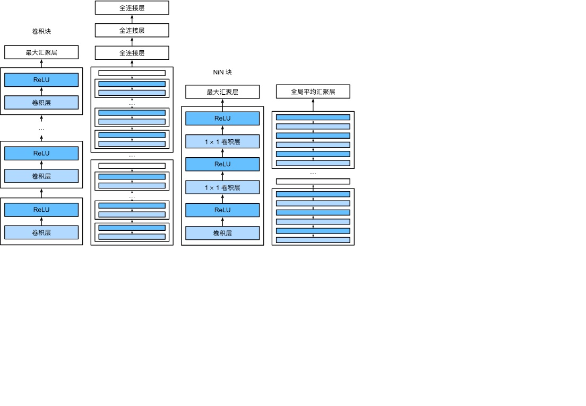
LeNet 证明了 CNN 可用，AlexNet 证明了 CNN 强大，VGG 给出了"块式"设计范式，ResNet 用残差连接突破深度极限，NiN 用 1×1 卷积和全局平均池化消灭了稠密层——今天的所有主流网络都站在它们肩上。
核心公式速查
| 公式 | 含义 |
|---|---|
| \(\mathbf{Y} = \mathbf{X} \star \mathbf{W} + b\) | 卷积层基本运算 |
| \(h(i,j) = \sum_a \sum_b X(i+a,j+b) \cdot K(a,b)\) | 二维互相关 |
| \((n_h-k_h+p_h+1) \times (n_w-k_w+p_w+1)\) | 填充后的输出尺寸 |
| \(\lfloor (n_h+p_h-k_h+s_h)/s_h \rfloor \times \lfloor (n_w+p_w-k_w+s_w)/s_w \rfloor\) | 步幅后的输出尺寸 |
| \(\mathbf{Y} = \sum_{c} \mathbf{X}(c,:,:) \star \mathbf{W}(c,:,:)\) | 多输入通道卷积 |
| \(c_o \times c_i \times k_h \times k_w\) | 卷积核的总参数量 |
总结与思考
12.1CNN 核心组件一览
- 卷积运算：滑动核提取局部特征，权重共享大幅减少参数
- 填充与步幅：灵活控制输出尺寸，适应不同网络设计需求
- 多通道：输入通道融合多源信息，输出通道学习多样化特征
- 池化层：提供平移不变性，降低空间分辨率，无额外参数
- 设计哲学：局部性 + 权值共享 + 平移不变性 + 层次特征
12.2课堂自测
12.3下讲预告
第 05 讲：循环神经网络（RNN）（理论 2 学时）——从图像转向序列数据：文本、语音与时间序列如何建模？循环结构、梯度消失的再认识、LSTM 与 GRU 的门控设计。请先复习第 03 讲的反向传播与数值稳定性。